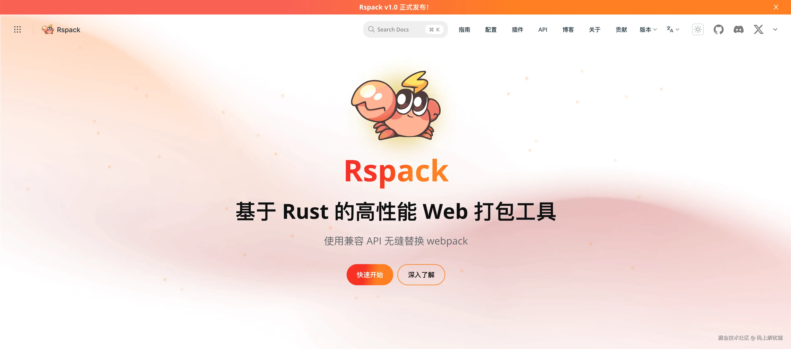

引言
在前端开发的舞台上，高效的打包工具如同璀璨的明星，照亮着开发者前行的道路。今天，我们将深入对比两款备受瞩目的工具 —— Rspack 和 Rolldown，探寻它们各自的独特魅力和优势。

一、Rspack：性能卓越的打包利器
Rspack 是基于 Rust 编写的下一代 JavaScript 打包工具， 兼容 webpack 的 API 和生态，并提供 10 倍于 webpack 的构建性能。
Rspack 发展
2023 年 3 月 6 日 正式发布 0.1 版本， 2024 年 8 月 28 日 发布 1.0 版本，这意味着 Rspack 已经达到生产稳定，覆盖了 webpack 绝大多数的 API 和功能，并已经做好支持更多用户的准备。 当前项目 Github 已经有 8.9k Start;
为什么要做 Rspack
近两年，社区中涌现出多个基于 Rust 的 bundler，它们的性能表现都相当优异。Rspack 在确保卓越性能的同时，也在灵活度、兼容性等方面做到了社区领先。
Rspack 当前的目标是：
- 帮助现有的 webpack 项目渐进地迁移到高性能的 bundler 上，使构建性能不再成为项目迭代的瓶颈；
- Rspack 不仅仅适用于浏览器和 Node.js 这种我们熟悉的环境中，它的目标是覆盖所有运行 JavaScript 的场景，这意味着 Rspack 也可以很方便地支持 Deno、Electron、跨平台、小程序等一切 JavaScript 可以运行的环境。
- 我们发现在单一的工具上兼顾「灵活性」和「开箱即用」是非常困难的事情。因此，在开源 Rspack 之后，我们开发了一套完整的 Rstack 工具链，包含 Rsbuild、Rspress、Rsdoctor 和 Rslib，它们分别面向不同的使用场景。例如，为了解决 Rspack 配置复杂、上手成本高的问题，我们通过 Rsbuild 来提供开箱即用的开发体验。
Rspack 特性

- 极致性能 作为基于 Rust 实现的 Bundler，Rspack 始终将性能作为核心指标。从 0.1 版本到 1.0 版本，Rspack 进行了大量的性能改进，在各种场景下都展现出了卓越的性能表现。例如，在 benchmark 中，Rspack 1.0 的构建性能相比 0.1 版本有了显著提升，同时还支持了 lazy compilation 等核心功能，为大型项目提供了更好的性能保障。
- 兼容性强 Rspack 兼容 webpack 的 API 和生态，这使得大量使用 webpack 的项目能够平滑地迁移到 Rspack。目前，Rspack 已经兼容了社区几乎所有的 loader，在下载量最高的 50 个 webpack 插件中，80%以上都可以在 Rspack 中使用或找到替代方案。此外，Rspack 还支持了众多的库和框架，如 React、Preact、Vue、Solid、Svelte、NestJS 等。
- 小体积产物 Rspack 一直关注生产构建的包体积，通过逐步对齐 webpack 的各个产物优化能力，实现了完整的 split chunks、tree shaking、scope hoisting、mangle exports 等重要特性。在部分场景下，Rspack 的产物体积已经略优于 webpack。
- 支持模块联邦 2.0 Rspack 团队与 Module Federation 团队合作开发了 Module Federation 2.0，提供了动态 TS 类型提示、Runtime 插件机制、devtools、平台部署协议等功能，使得 Module Federation 可以更好地支持基于微前端架构的大型应用。
二、Rolldown：Vue 团队开源的新星
Rolldown 作为 Vue 团队开源的打包工具，是一个用 Rust 编写的 JavaScript bundler，旨在作为 Vite 中使用的未来 bundler。它提供了 Rollup 兼容的 API 和插件接口，但在同时也有着 esbuild 的优势。

Rolldown 发展
2024 年 3 月 8 日 Vue 团队正式开源了其对外公布已久的打包工具：Rolldown，2023 年 7 月 23 日 发布最新版本 v0.12.2, 当前项目 Github 已经有 7.8k Start, 可以说是发展迅猛啊。

为什么要有 Rolldown
Vite 的需求与挑战
Vite 作为一个现代化的前端开发框架，一直致力于为开发者提供快速且流畅的开发体验。然而，随着项目复杂性的增加，现有的打包工具开始显现出不足之处。为了应对这些挑战，Vite 选择了两条腿走路的方式——结合 Esbuild 的速度与 Rollup 的稳定性。但是，这种方式也带来了开发与生产环境行为不一致的问题。
Rolldown 的使命
在这样的背景下，Rolldown 应运而生。这款由 Rust 语言打造的新一代打包工具，旨在融合 Esbuild 的高速度与 Rollup 的灵活性，为前端开发者提供一个更为理想的打包解决方案。Rolldown 的目标不仅仅是成为 Vite 的核心打包工具，它还有着更远大的愿景：统一开发与生产环境下的打包流程，减少不必要的性能损耗。

Rolldown 特性
- 与 Rollup 兼容 Rolldown 提供了与 Rollup 兼容的 API 和插件接口，这使得开发者可以轻松地从 Rollup 过渡到 Rolldown，充分利用 Rollup 丰富的插件生态，为项目带来更多的可能性。
- Rust 编写的高效性能 同样使用 Rust 语言编写的 Rolldown，在性能上有着天然的优势。能够快速处理复杂的打包任务，并且在内存管理方面表现出色。
- 对 Vue 项目的强大支持 对于 Vue 项目而言，Rolldown 可谓是如虎添翼。它能够与 Vue 的开发模式完美契合，为 Vue 开发者提供高效的打包解决方案。在 Vue 项目中，Rolldown 可以快速处理 Vue 组件的打包，优化组件的加载速度，提升用户体验。
三、对比与选择
- 性能对比 在性能方面，Rspack 和 Rolldown 都展现出了 Rust 语言带来的高效性能。然而，具体的性能表现可能会因项目的不同而有所差异。Rspack 在大型项目中的性能优化较为突出，而 Rolldown 在与 Rollup 生态的结合上可能会为某些项目带来更好的性能体验。
- 兼容性对比 Rspack 兼容 webpack 的 API 和生态，对于已经使用 webpack 的项目来说，迁移成本相对较低。Rolldown 则与 Rollup 兼容，对于熟悉 Rollup 生态的开发者来说更加友好。
- 生态对比 Rspack 拥有丰富的插件和扩展生态，并且在不断发展壮大。Rolldown 借助 Rollup 的生态，也能够满足大部分项目的需求。但相对而言，Rspack 的生态可能更加成熟。
- 适用场景 如果你的项目是基于 webpack 构建的，并且对性能有较高的要求，那么 Rspack 可能是一个不错的选择。而如果你的项目与 Vue 紧密结合，或者更倾向于使用 Rollup 的生态，那么 Rolldown 可能更适合你。
四、结论
Rspack 和 Rolldown 都是优秀的前端打包工具，它们各有优势，适用于不同的项目场景。开发者在选择时，应根据项目的具体需求、团队技术栈和未来发展规划来进行综合考虑。无论选择哪一款工具，都能够为前端开发带来高效、便捷的打包体验，助力项目的成功。
在前端技术不断发展的今天，我们期待 Rspack 和 Rolldown 能够继续发挥各自的优势，为开发者提供更好的工具和服务，共同推动前端开发领域的进步。